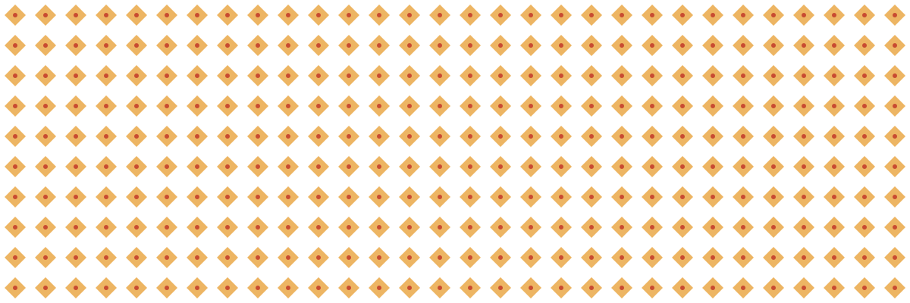

The art of Banjara, in five short chapters.
A long-form field guide to a craft that once travelled at the pace of a bullock, and now survives in the quiet persistence of those who still thread a needle by lamp-light.
A caravan, a cloth, a people.
The Banjara — known also as Lamani, Lambani, or Lambadi across the regions that received them — are a semi-nomadic people whose embroidery stands as an independent art form in its own right. For centuries they ran the subcontinent’s distribution network: grain, salt, cattle, and gunpowder moving through land before railways. A single Banjara chief, a Naik, is said to have commanded 180,000 pack bullocks.
When the British railways rewrote trade, the caravans dispersed. Their descendants settled wherever the routes ended — but the embroidery travelled with them, carried as its own tradition rather than as the craft of any single place. A Banjara woman’s dress has been called the most elaborate of any nomadic community; three garments — ghagra, blouse, odhni — weighted with silver, cowry, bone, and ivory.
Khadi, thread, and fourteen names.
The foundation is hand-loomed cotton khadi, dyed in natural sources — Rathanjot, Kattha, pomegranate peel. Onto a base of dark blue or red go threads in yellow, green, off-white and black; tiny circular shisha mirrors; cowry shells; titri coins; and little brass ghungroo bells along the pallu borders.
The work travels on fourteen named stitches. Names shift village to village, but the vocabulary below is the most widely recorded — an alphabet every Banjara embroiderer knows by hand.
A foundational outlining stitch — the frame around every motif.
Chain stitch in parallel lines — the spine of most borders.
An edging stitch that binds two fabrics along a seam with ornament.
A dense filling for the interior of a motif — textured, opaque.
Sun-flower Maki — a radial fill that catches light like a bloom.
A structured border, often anchoring mirrors onto the cloth.
A double-line stitch that travels in twos, framing motifs quietly.
A cowry-shaped stitch — the thread mimics the shell beside it.
A flowing, wave-like running stitch across the ground of the cloth.
The heaviest filling — closely packed, densely woven colour.
Small knots that sit like seeds across a patch of colour.
A couched, bead-like stitch that imitates a row of strung pearls.
A joining stitch that connects patches into ornamental patchwork.
Small diamonds from four straight lines — the signature geometry.
A ghagra that keeps watch.
Banjara embroidery is almost entirely non-figurative. No portraits, no narrative scenes. Instead, the cloth carries what scholars have called the essence of rangoli — bold geometry that follows symmetry, then quietly breaks it. Diamonds, triangles, rosettes, concentric circles. The motif is always secondary to the mirror: the shisha is placed first, the embroidery composed around it.
And every little thing stitched onto the cloth carries a reason. Mirrors are said to scatter the gaze of wild animals at night, and — more gently — to guard against the evil eye. Cowries and titris are symbols of Lakshmi, goddess of prosperity: each one a quiet blessing sewn into a hem. Ghungroo bells turn every step into music.
The traditional palette
The embroidery expresses the limitlessness and freedom of a wandering community — turning functional garments into cultural statements of ingenuity and resilience.
At the edge of its next generation.
Fewer young Banjara wear the full traditional dress each year. The embroidery survives, but it has migrated — onto cushion covers, tote bags, jackets, and household goods sold at melas, fairs, and the slowly growing circuit of exhibitions that want to see the craft continue.
This is not loss but translation. A craft that once moved at the pace of a bullock now moves at the pace of a mela stall — and the stitches are still the stitches. Every cushion cover in a fair is, quietly, doing the work of a museum. What preserves a craft is not nostalgia; it is demand, and a younger generation willing to keep the needle moving.
Further reading.
The writing above draws on three sources. Each is worth a visit for a closer look at the craft and the people who make it.
-
Pernia’s Pop-Up Shop — Encyclopedia: Banjara Embroidery
perniaspopupshop.com · encyclopedia entry on Banjara embroidery -
Maiwa — Banjara Embroidery
maiwa.com/pages/banjara-embroidery -
SlideShare — Banjara Embroidery: a study deck
slideshare.net · a study deck
That’s the chapter. Take it slow.
← Back to the beginning